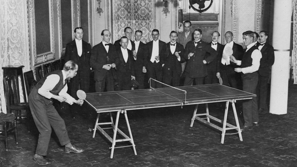

Historia
El tenis de mesa inicialmente fue creado como un juego para pasar el tiempo en tiempos de lluvia en Inglaterra en 1870, a causa de que el campo de tenis de campo no se podía jugar con lluvia o el campo mojado. Así fue como unos jugadores del tenis crearon el maravilloso mundo del Tenis de Mesa.
El deporte desde un principio quería ser infundado en los países para difundir el comunismo en 1949 desde un principio, hubo líderes comunistas como Mao Zedong y Zhou Enlai apoyando el movimiento. Mao decreto que el deporte nacional en China fuera el Tenis de Mesa pero actualmente se ve que es deporte liberal, en el cual existen infinitas posibilidades en un juego; un saque, un rebote, un efecto, un ataque, un levantamiento, etc.
